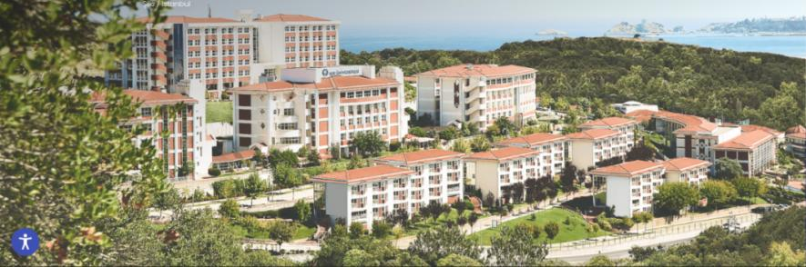

A short introduction to my PhD studies on Semantic Web Technologies in Multi-Agent Systems
And my PhD study published by IEEE Computer Society
You can get idea bout the current status of my field and latest research trends via the Semantic Technologies Lab
On my former research topics about Formal Methods, Conformance Testing, and Protocol Engineering
My previous research was published by both IEEE Communications Society and Elsevier Science
A beautiful view of the place where I am currently working at.
